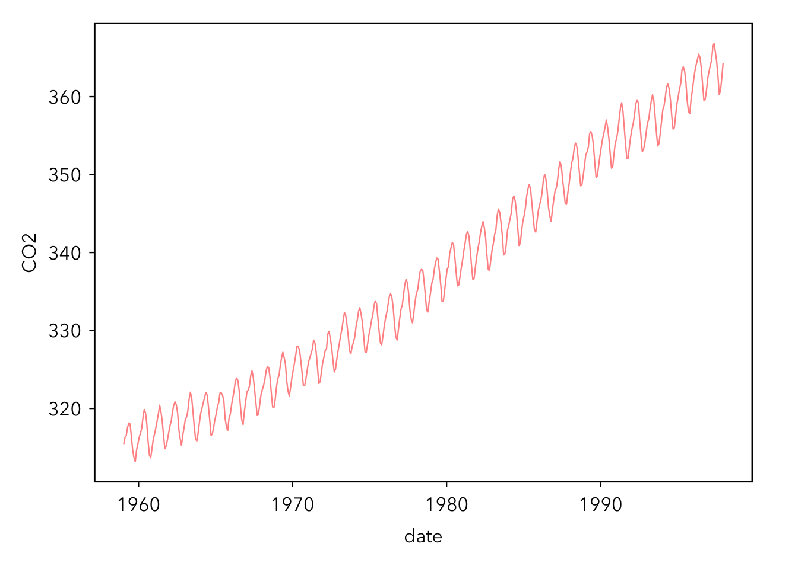
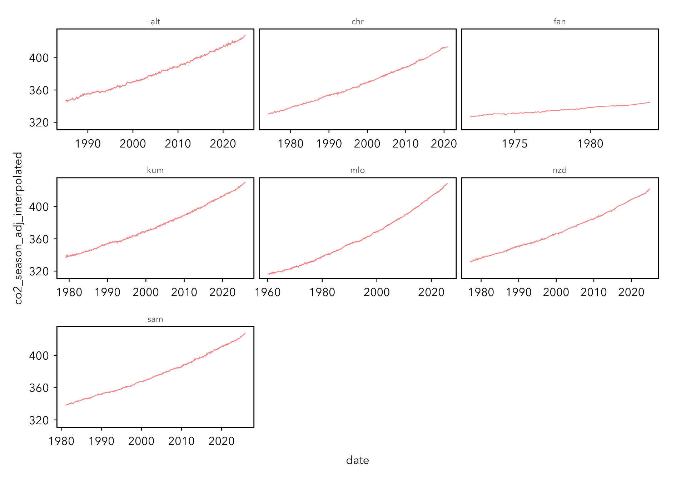

R is a functional programming language, meaning that it provides tools for writing and manipulating functions (wickham2019?). Functional programming contrasts with imperative programming where the main focus is on how an operation is performed. Imperative programming allows the programmer to follow exactly what is going on throughout the process. Both approaches allow us to write iterative code.
Part I: how to repeat yourself
Let’s run through an example of iterative code exemplifying each approach. Say we want to find the median petal length for each species of Iris in the built-in iris dataset. We could just could just copy and paste:
# load the tidyverselibrary(tidyverse)
── Attaching core tidyverse packages ──────────────────────── tidyverse 2.0.0 ──
✔ dplyr 1.1.2 ✔ readr 2.1.4
✔ forcats 1.0.0 ✔ stringr 1.5.0
✔ ggplot2 3.4.2 ✔ tibble 3.2.1
✔ lubridate 1.9.2 ✔ tidyr 1.3.0
✔ purrr 1.0.1
── Conflicts ────────────────────────────────────────── tidyverse_conflicts() ──
✖ dplyr::filter() masks stats::filter()
✖ dplyr::lag() masks stats::lag()
ℹ Use the conflicted package (<http://conflicted.r-lib.org/>) to force all conflicts to become errors
# load iris datadata(iris)# median petal length for Iris setosamedian(iris$Petal.Length[which(iris$Species =="setosa")])
[1] 1.5
# median petal length for Iris versicolormedian(iris$Petal.Length[which(iris$Species =="versicolor")])
[1] 4.35
# median petal length for Iris virginicamedian(iris$Petal.Length[which(iris$Species =="virginica")])
[1] 5.55
This method might cause headaches if we were to make a mistake in editing the code or if we have more than three medians to calculate. Let’s see if we can use a more scalable approach, the for loop. A for loop has 2 main components (martin2020?):
The first line dictates how many times we want to loop
The bracketed code defines the repeated code
# create a vector to store the outputpetal_medians <-vector()# loop through the speciesfor (species inunique(iris$Species)) { petal_medians[species] <-median(iris$Petal.Length[which(iris$Species == species)])}
Let’s motivate the use of functions. We will write a function that does the same thing as above, but faster and with more customization. For example, we can perform the same function over and over on different data frames instead of copying and pasting the for loop for each data frame. Moreover, functions provide at least three major advantages over other strategies (martin2020?):
they can have names which makes code easier to understand
if your requirements change, you only have 1 place to edit
they minimize copy-paste errors
It’s typically recommended that you should write a function when you’ve copy and pasted code at least once (follow the DRY principle: “don’t repeat yourself”)
You can think about functions as building blocks for solving data science problems. Functions are “first class objects” and can be treated just like other R objects (peng2012?). For instance, they can be passed as arguments to other functions and can be nested. Functions are created using the function() directive and have the form:
functionName <-function(x, y =1) {# function body here}
Let’s put our iris example in function form.
# create function speciesMedian <-function(df = df, col ="Petal.Length") { medians <-vector()for (species inunique(iris$Species)) { medians[species] <-median(iris[iris$Species == species, col]) } medians} # execute function speciesMedian(iris)
setosa versicolor virginica
1.50 4.35 5.55
When drafting a function, first identify the inputs (e.g., df and col from speciesMedian())
In the example above, speciesMedian() has two arguments df and col. col has a default value of "Petal.Length" meaning that if you don’t change its value when you call the function, it will automatically be set to "Petal.Length". R function arguments are matched either by position or by name. This means that writing speciesMedian(iris, "Petal.Length") (matched by position) and speciesMedian(col = "Petal.Length", df = iris) will do the same thing. You can test it out to prove it to yourself!
Usually first arguments contain data (e.g., df) and the last ones contain calculation details (e.g., col)
You may have intuited that I added a little extra functionality into the function speciesMedian(). Because I added an argument for col, we are able to use this function to calculate the median value of other columns. Let’s see this in practice.
# median sepal length per speciesspeciesMedian(iris, "Sepal.Length")
setosa versicolor virginica
5.0 5.9 6.5
# median sepal width per speciesspeciesMedian(iris, "Sepal.Width")
setosa versicolor virginica
3.4 2.8 3.0
Objects within a function reset each time the function is called (e.g., medians within the speciesMedian() function does not exist in your global environment)
When we made our function, you may have noticed that we combined the for loop and function approaches into a single composite. This method still suffers from the slowness and the clunkiness of for loops. To supercharge our median calculations, let’s use the purr package from the tidyverse.
The purrr package provides map() functions which take a function and a series of elements to apply the function on. Once we gather all of the building blocks for our data science problem, we can use purrr to combine them.
# let's use the map function to calculate the median of each column# for each species map(split(iris, iris$Species), # split the iris data by species~summarize(.x %>%group_by(Species), # group by speciesacross(everything(), # iterate over every column median)) # calculate the median) %>%list_rbind() # bind into a single df
# I was trying to illustrate my point using map functions# but there's actually a much simpler way to achieve the same# result using dplyrsummarize(iris %>%group_by(Species), across(everything(), median))
The names of the different map() functions are derived from your desired output (wright2021?). For example,
map() - returns a list
map_lgl() - returns a logical vector
map_int() - returns an integer vector
map_dbl() - returns a double vector
map_chr() - returns a character vector
Part II: flexing your skills
For Part II of this tutorial, we will be working with the built-in data set co2. This is a simple data set of the monthly atmospheric CO2 concentrations at the Mauna Loa Observatory in Hawaii from 1959 to 1997.
To start, we need to load some packages and our data. As is, the data is in the form of a time series. We want to convert it to a data frame.
# load necessary packages - make sure you have these installed!library(rvest)library(data.table)# load Mauna Loa Atmospheric CO2 Concentration datadata(co2)# convert to a data frameco2 <-data.frame(CO2 =as.numeric(co2),month =rep(month.abb, 39),year =rep(1959:1997, each =12) )# new column for dateco2 <- co2 %>%# create a date column and convert to date format# we know the measurement is taken on the 15thmutate(date =paste("15", month, year) %>%as.Date(., format ="%d %b %Y"))
Let’s explore the data! Here are some easy ways to get a feel for your data.
head(co2) # view the first couple of rows of data
CO2 month year date
1 315.42 Jan 1959 1959-01-15
2 316.31 Feb 1959 1959-02-15
3 316.50 Mar 1959 1959-03-15
4 317.56 Apr 1959 1959-04-15
5 318.13 May 1959 1959-05-15
6 318.00 Jun 1959 1959-06-15
tail(co2) # view the last couple of rows of data
CO2 month year date
463 364.52 Jul 1997 1997-07-15
464 362.57 Aug 1997 1997-08-15
465 360.24 Sep 1997 1997-09-15
466 360.83 Oct 1997 1997-10-15
467 362.49 Nov 1997 1997-11-15
468 364.34 Dec 1997 1997-12-15
str(co2) # take a look at the classes of data
'data.frame': 468 obs. of 4 variables:
$ CO2 : num 315 316 316 318 318 ...
$ month: chr "Jan" "Feb" "Mar" "Apr" ...
$ year : int 1959 1959 1959 1959 1959 1959 1959 1959 1959 1959 ...
$ date : Date, format: "1959-01-15" "1959-02-15" ...
# make a line plot of the data# note that your plot will probably look aesthetically different than# mine because I am using a base R inspired gg themeggplot(data = co2, aes(x = date, y = CO2)) +geom_line(alpha =0.5, color ="red")

Now this is all well and good, but what if we wanted to know what happens after 1997. After all, some of the people in this room were born after that date and we want to know what has happened in our lifetimes.
Okay, let’s grab some data from the Scripps CO2 program. Because we are all hackers in the room, we are going to scrape data from the website programatically instead of downloading it and then importing it. We will write a function to do this for all of the sampling station locations we are interested in! Before we even think about writing a function, we want to make sure our code works for one site.
For this example, I am going to pick our old friend the Mauna Loa Observatory, but I want you to pick a different one.
# URL of the website containing the .csv filesurl <-"https://scrippsco2.ucsd.edu/data/atmospheric_co2/mlo.html"# read the HTML content of the webpagewebpage <-read_html(url)# find all links on the webpagelinks <- webpage %>%html_nodes("a") %>%html_attr("href")# filter links that point to CSV files then# filter the links to only the file containing flask CO2 monthly readingscsv_links <-tibble(link = links) %>%filter(str_detect(link, ".csv$"),str_detect(link, "flask_co2/monthly")) link2file <- csv_links[1]# download and import CSV file into Rfile_url <-paste0("https://scrippsco2.ucsd.edu", link2file)filename <-basename(file_url)download.file(file_url, destfile = filename, mode ="wb")data1 <-read.csv(filename)view(data1)
Ack! There’s a bunch of junk at the top of the file. Let’s wrangle this sucker real fast. We know from viewing the file that the first column header is Yr so let’s just skip everything before that.
# skip everything until the `Yr` columndata <-fread(filename, skip ="Yr", check.names =TRUE)# remove downloaded filesfile.remove(filename)view(data)
That looks much better. All that junk was metadata. I’ll copy it below, but if you don’t trust me, you can go back and view data1.
The data file below contains 10 columns. Columns 1-4 give the dates in several redundant formats. Column 5 below gives monthly Mauna Loa CO2 concentrations in micro-mol CO2 per mole (ppm), reported on the 2012 SIO manometric mole fraction scale. This is the standard version of the data most often sought. The monthly values have been adjusted to 24:00 hours on the 15th of each month. Column 6 gives the same data after a seasonal adjustment to remove the quasi-regular seasonal cycle. The adjustment involves subtracting from the data a 4-harmonic fit with a linear gain factor. Column 7 is a smoothed version of the data generated from a stiff cubic spline function plus 4-harmonic functions with linear gain. Column 8 is the same smoothed version with the seasonal cycle removed. Column 9 is identical to Column 5 except that the missing values from Column 5 have been filled with values from Column 7. Column 10 is identical to Column 6 except missing values have been filled with values from Column 8. Missing values are denoted by -99.99. Column 11 is the 3-digit sampling station identifier.
Alright. We know right off the bat that we are going to have to do some more wrangling here. I want to rename the columns to something that makes sense to me, then I want to delete the rows without data, then I want to replace missing values with NAs, and then I want to convert the date column into class Date. We also want to make sure all of the measurement columns are in numeric form.
# make a vector of new namesnew_names <-c("year","month","date_excel","date","co2","co2_season_adj","co2_smooth","co2_smooth_season_adj","co2_interpolated","co2_season_adj_interpolated")# replace old namesdata <- data %>%rename_with(~new_names, everything())# delete rows with no datadata <- data %>%slice(-c(1:2))# replace -99.99 or NaN with NAsdata <- data %>%mutate_all(~ifelse(.x ==-99.99| .x =="NaN", NA_real_, .x))# reformat date columndata <- data %>%mutate(date =as.Date(as.numeric(date_excel) -1, origin ="1899-12-30"))# reformat measurement columnsdata <- data %>%mutate_at(vars(starts_with("co2")), as.numeric)view(data)
Yay, that looks nice :). Let’s explore this data set just like we did the built-in co2 data set.
head(data) # view the first couple of rows of data
year month date_excel date co2 co2_season_adj co2_smooth
1: 1960 1 21930 1960-01-14 NA NA 316.32
2: 1960 2 21961 1960-02-14 NA NA 316.97
3: 1960 3 21990 1960-03-14 317.70 316.29 317.80
4: 1960 4 22021 1960-04-14 319.08 316.57 318.97
5: 1960 5 22051 1960-05-14 NA NA 319.48
6: 1960 6 22082 1960-06-14 NA NA 318.72
co2_smooth_season_adj co2_interpolated co2_season_adj_interpolated
1: 316.23 316.32 316.23
2: 316.31 316.97 316.31
3: 316.39 317.70 316.29
4: 316.47 319.08 316.57
5: 316.54 319.48 316.54
6: 316.62 318.72 316.62
tail(data) # view the last couple of rows of data
year month date_excel date co2 co2_season_adj co2_smooth
1: 2023 7 45122 2023-07-14 421.06 420.81 421.42
2: 2023 8 45153 2023-08-14 419.69 421.65 419.49
3: 2023 9 45184 2023-09-14 418.20 421.70 418.23
4: 2023 10 45214 2023-10-14 NA NA 418.73
5: 2023 11 45245 2023-11-14 NA NA 420.43
6: 2023 12 45275 2023-12-14 NA NA 421.93
co2_smooth_season_adj co2_interpolated co2_season_adj_interpolated
1: 421.17 421.06 420.81
2: 421.45 419.69 421.65
3: 421.73 418.20 421.70
4: 422.00 418.73 422.00
5: 422.28 420.43 422.28
6: 422.55 421.93 422.55
str(data) # take a look at the classes of data
Classes 'data.table' and 'data.frame': 768 obs. of 10 variables:
$ year : int 1960 1960 1960 1960 1960 1960 1960 1960 1960 1960 ...
$ month : int 1 2 3 4 5 6 7 8 9 10 ...
$ date_excel : chr "21930" "21961" "21990" "22021" ...
$ date : Date, format: "1960-01-14" "1960-02-14" ...
$ co2 : num NA NA 318 319 NA ...
$ co2_season_adj : num NA NA 316 317 NA ...
$ co2_smooth : num 316 317 318 319 319 ...
$ co2_smooth_season_adj : num 316 316 316 316 317 ...
$ co2_interpolated : num 316 317 318 319 319 ...
$ co2_season_adj_interpolated: num 316 316 316 317 317 ...
- attr(*, ".internal.selfref")=<externalptr>
# make a line plot of the dataggplot(data = data, aes(x = date, y = co2)) +geom_line(alpha =0.5, color ="red")
# looks good! there are some missing values at the start
I think we are ready to start making our functions! Let’s try to grab all of the sites with flask CO2 data and bind them all into one data frame. For simplicity, here’s a list of all of the sites which meet that requirement:
Alert, NWT, Canada
Mauna Loa Observatory, Hawaii
Cape Kumukahi, Hawaii
Fanning Island
Christmas Island
American Samoa
Kermadec Islands
Baring Head, New Zealand
Let’s make a series of functions for this problem: one to get the data urls, one to download and load the data into R, and one to wrangle it. Firstly, we want to get the URLs for each of the above sites.
# function to find matches within a vector from a given URLgetURLs <-function(url, vector) {# read the HTML content from the given URL html <-read_html(url)# extract text from <td class="rollover-links"> tags matches <-html_nodes(html, "td.rollover-links") %>%html_text()# find matches within the vector matched_vector <- vector[vector %in% matches]# E]extract href attributes corresponding to the matched text href_matches <-html_nodes(html, "td.rollover-links") %>%html_nodes("a") %>%html_attr("href")# prepend the base URL string to each href attribute href_matches <-paste0("https://scrippsco2.ucsd.edu/data/atmospheric_co2/", href_matches)# return URLs only for the matches within the vectorreturn(href_matches[matches %in% matched_vector])}url <-"https://scrippsco2.ucsd.edu/data/atmospheric_co2/sampling_stations.html"sites <-c("Alert, NWT, Canada", "Mauna Loa Observatory, Hawaii", "Cape Kumukahi, Hawaii", "Fanning Island", "Christmas Island", "American Samoa", "Kermadec Island", "Baring Head, New Zealand")matched_urls <-getURLs(url = url, vector = sites)print(matched_urls)
Sweet! Now we have all of the URLs. Let’s download the data now. We need to edit our code from the earlier chunk where we supplied a URL, downloaded a .csv, and loaded it into R. Before we copied and pasted the site URL. Now we want to supply our function with our matched_urls vector and get the downloaded data.
# function to scrape data from a URLscrapeData <-function(url) {# read the HTML content of the webpage webpage <-read_html(url)# find all links on the webpage links <- webpage %>%html_nodes("a") %>%html_attr("href")# filter links that point to CSV files then# filter the links to only the file containing flask CO2 monthly readings csv_links <-tibble(link = links) %>%filter(str_detect(link, ".csv$"),str_detect(link, "flask_co2/monthly")) # if no CSV link is found, return NULLif (nrow(csv_links) ==0) {return(NULL) }# select the first CSV link link2file <- csv_links$link[1] file_url <-paste0("https://scrippsco2.ucsd.edu", link2file) filename <-basename(file_url)# skip everything until the `Yr` column and read the CSV data <-fread(file_url, skip ="Yr", check.names =TRUE)# return the datareturn(data)}# scrape data from each URL and name each df after the sitedfs <-set_names(map(matched_urls, scrapeData), map(matched_urls, ~sub("\\..*$", "", basename(.x))))# filter out NULL values (if any)dfs <-compact(dfs)
Ok, now that we have the data downloaded, let’s wrangle it and flatten it into a single data frame with a column identifying each site.
# make a function to wrangle the scraped dataprocessData <-function(data, site_name) {# make a vector of new names new_names <-c("year","month","date_excel","date","co2","co2_season_adj","co2_smooth","co2_smooth_season_adj","co2_interpolated","co2_season_adj_interpolated" )# replace old names data <- data %>%rename_with(~ new_names, everything())# delete rows with no data data <- data %>%slice(-c(1:2))# replace -99.99 or NaN with NAs data <- data %>%mutate_all(~ifelse(.x ==-99.99| .x =="NaN", NA_real_, .x))# reformat date column data <- data %>%mutate(date =as.Date(as.numeric(date_excel) -1, origin ="1899-12-30"))# reformat measurement columns and add a site column data <- data %>%mutate_at(vars(starts_with("co2")), as.numeric) %>%mutate(site = site_name)return(data)}# process the data for each dataframe within the df list and# bind everything togetherco2_all <-map2(dfs, names(dfs), processData) %>%list_rbind()
Finally, let’s look at our newly acquired data. We can use ggplot2 to create facets for each site and look at all of our data at once. We can also look at other columns such as co2_season_adj_interpolated.
# make a line plot of the data and facet by siteggplot(data = co2_all, aes(x = date, y = co2)) +geom_line(alpha =0.5, color ="red") +facet_wrap(~ site, scales ="free_x")
# make a line plot of the interpolated and seasonally adjusted # data and facet by siteggplot(data = co2_all, aes(x = date, y = co2_season_adj_interpolated)) +geom_line(alpha =0.5, color ="red") +facet_wrap(~ site, scales ="free_x")

Glossary
first class objects
objects that are treated as any other data type
functional programming
the computer is given a set of functions to be performed
imperative programming
the computer is given a set of steps to accomplish the goal
iterative code
a set of instructions being repeated
pipe operator %>%
takes the output of the expression on the left and passes it as the first argument of the function on the right
purrr
a package providing tools for working with functions and vectors
tidyverse
a collection of open source packages built with “tidy data” design principles